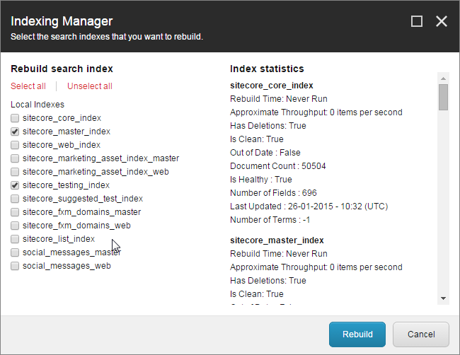

Rebuild search indexes
Describes how you rebuild search indexes in different ways.
There are situations where you need to rebuild indexes, for example, when you deploy to a production environment, when indexes are out of date, to remove obsolete documents from a search index, or when indexes have been corrupted.
Note
The 'Re-Index Tree' operation, also known as the Refresh operation, updates the search index based on the items that are still present in a Sitecore database. This operation does not delete any obsolete documents from a search index.
There are three different ways to rebuild indexes. This topic describes how to:
Use the Control Panel
Use custom code
Use the Content Editor
Use the CLI
To rebuild indexes from the Sitecore Control Panel:
Log in to XM Cloud and, on the Dashboard, on the Tools tab, click Control Panel.
In the Indexing section, click Indexing Manager.
In the Indexing Manager dialog box, select the indexes you want to rebuild, and click Rebuild:

You can rebuild indexes from custom code by running a script similar to one of these from a custom .aspx page:
// To rebuild "new" search indexes, use this piece of code for every "new" index
IndexCustodian.FullRebuild(ContentSearchManager.GetIndex("[INDEX NAME]"), true);
// Or to rebuild all indexes, use the following piece of code:
IndexCustodian.RebuildAll();
To rebuild indexes from the Content Editor:
In the Content Editor, click the Developer tab.
Note
If you do not see the Developer tab, right-click in the menu bar and select Developer in the list of tabs.
In the Indexing tools group, select one of the options to rebuild indexes:
Rebuild index – opens a list of all indexes. This list contains information about when each index was last rebuilt. Select an index to rebuild it.
Rebuild all – rebuilds all indexes.
Re-Index Tree – process the selected item and all descendants recursively, and force an update operation on all indexes that are related to the selected content area.
Note
Use this command only in situations where incremental indexing is either not working as expected, or when you use the manual update strategy. You should only do this when absolutely necessary.
Use the Sitecore CLI
You can use the indexing plugin that is available for the Sitecore CLI to rebuild indexes.
To rebuild indexes using the Sitecore CLI:
Run the
sitecore index rebuildcommand in a terminal.
Note
For more information, see The CLI index command.